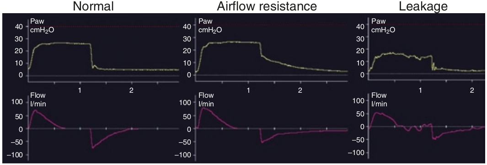

منحنی فشار بازدمی اطلاعاتی در مورد بیمار ارائه نمی کند. در عوض اطلاعاتی در مورد کیفیت دریچه بازدمی ونتیلاتور نشان میدهد. چنانچه افت فشار بازدمی در مقابل افزایش بارز مقاومت در مقابل جریان هوا صورت بگیرد، افت فشار در ابتدای بازدم ملایم تر انجام میشود. در صورت وجود نشت دریجه بازدمی فشار بازدم از PEEP تنظیم شده بر روی ونتیلاتور کمتر میشود.

منحنی فشار بازدمی
۱ - برابر با فشار حبابچه ای است
۲ - به PEEP تنظیم شده می رسد
۳ - در صورت وجود autoPEEP افزایش نشان میدهد
۴ - در صورت نشت دریچه بازدمی افزایش می یابد
۵ - اطلاعاتی در مورد سیستم تنفسی بیمار ارائه می کند